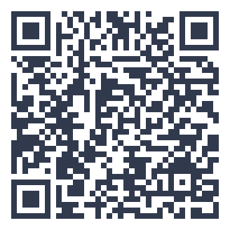

thuisitaliaans.com/esercizi/gli-utensili-da-tavola.html
Gli utensili da tavola
Abbina ogni utensile da tavola al suo utilizzo.
0 coppie trovate su 6
Cosa contiene questo esercizio
«Gli utensili da tavola» è un esercizio di italiano di livello A1 con 6 abbinamenti, tra cui la forchetta, il coltello, il cucchiaio, il piatto, il bicchiere e il tovagliolo. Qui sotto trovi tutto il contenuto in chiaro: puoi leggerlo prima di provare, oppure usarlo per correggerti dopo.
Abbinamenti corretti (6)
- la forchetta
- serve per infilzare il cibo
- il coltello
- serve per tagliare il cibo
- il cucchiaio
- serve per la minestra
- il piatto
- ci si mangia sopra
- il bicchiere
- ci si beve l'acqua o il vino
- il tovagliolo
- serve per pulirsi la bocca
📘 Lessico: gli utensili da tavola
Conoscere gli utensili da tavola è utile per apparecchiare e mangiare correttamente.
Padroneggiare questo argomento ti aiuta a comunicare con sicurezza nelle situazioni più semplici e quotidiane. Questo esercizio allena il lessico del cibo, un argomento centrale nella cultura italiana e nella vita quotidiana.
Questo argomento fa parte del livello base del QCER (Quadro Comune Europeo di Riferimento per le lingue), il punto di partenza per chi inizia lo studio dell'italiano da zero.
Fai prima gli abbinamenti di cui sei sicuro, poi usa il ragionamento per eliminare le opzioni rimaste: è una strategia utile anche in altri contesti, come esami e test standardizzati.
Le buone maniere a tavola partono dal lessico giusto
Parliamo delle abitudini a tavola, italiane e non solo.
Prenota una lezione gratuitaVuoi allenarti anche fuori dal sito?
Con l'app Ti hai un percorso QCER completo dall'A1 al C2, edicola tematica, romanzi graduati e un dizionario in 14 lingue.
Scopri l'app Ti →📖 Approfondisci con il blog: cultura italiana

{kind=link}